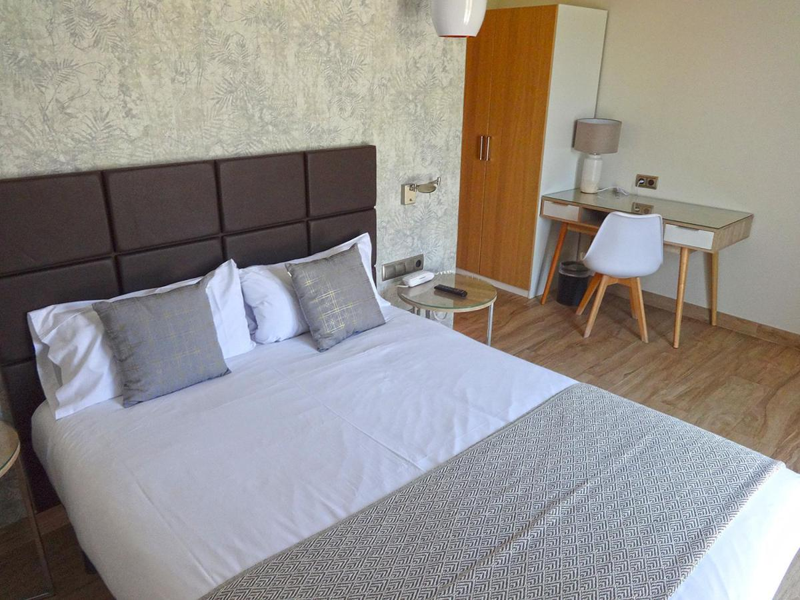
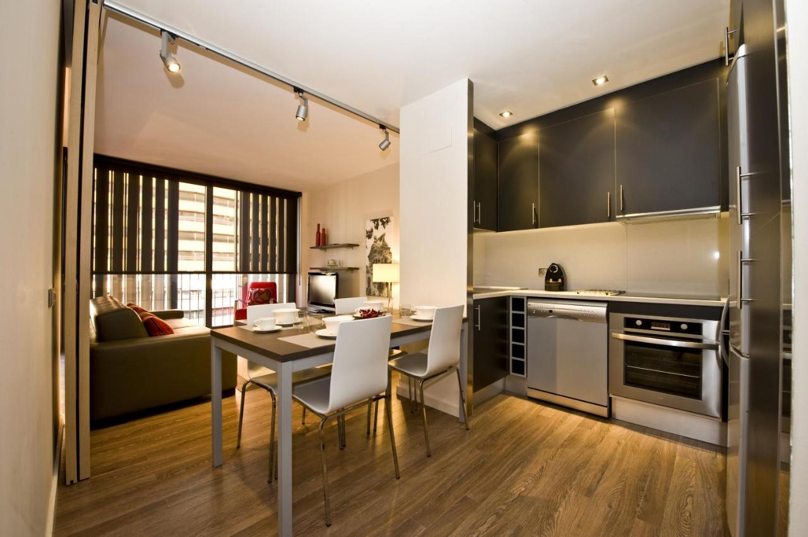
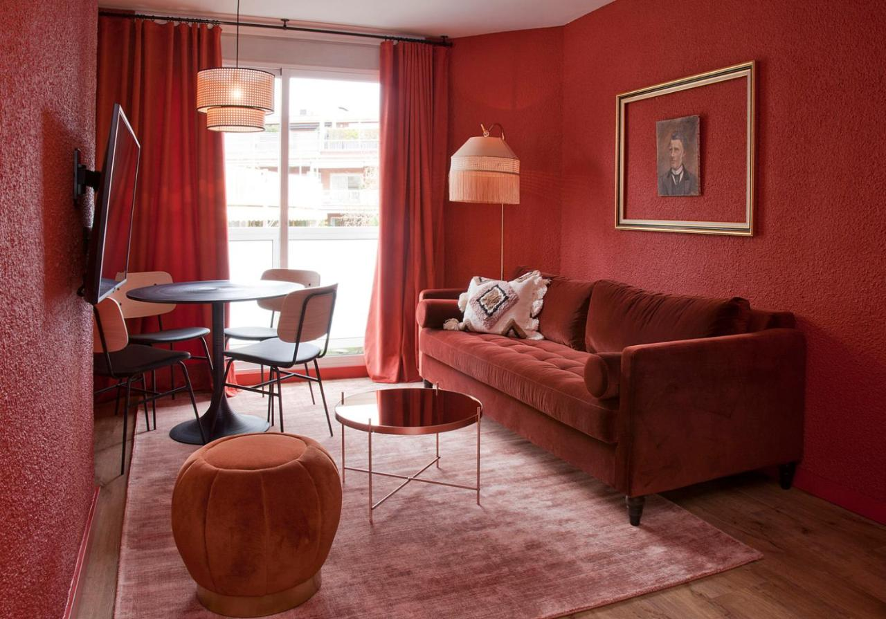
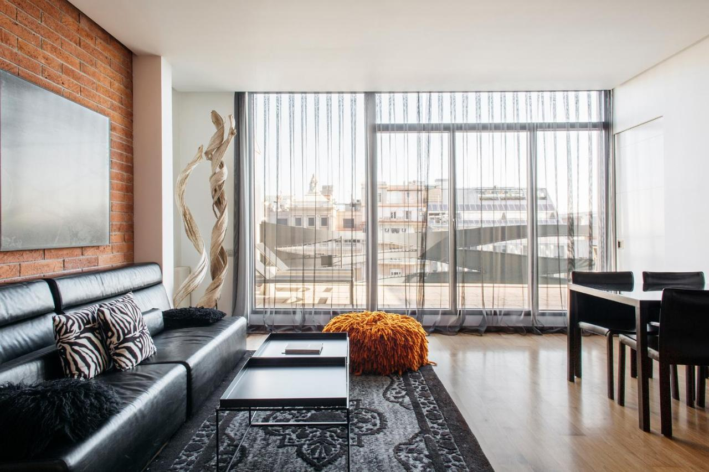
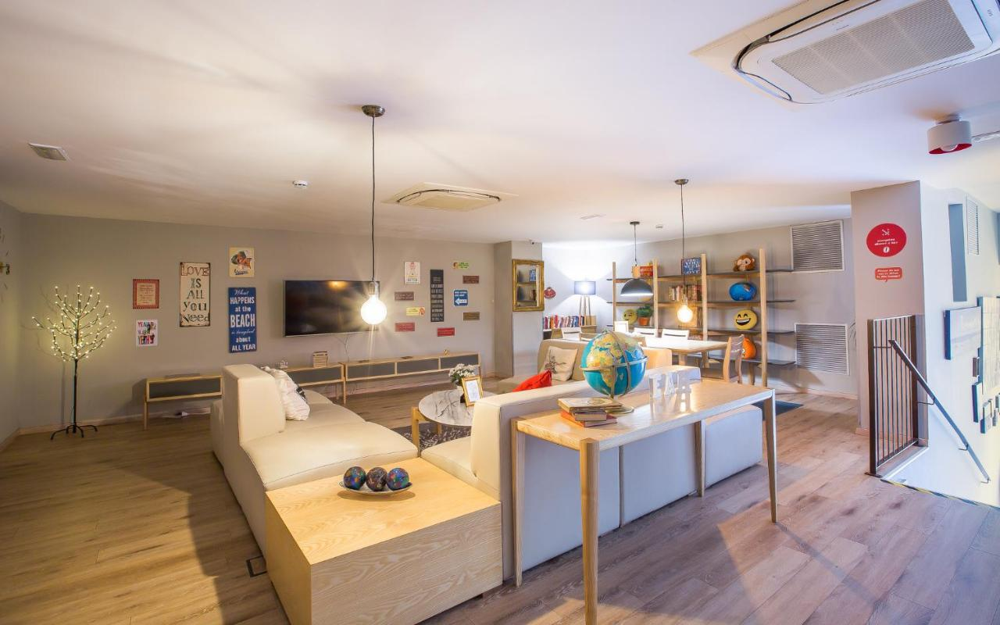
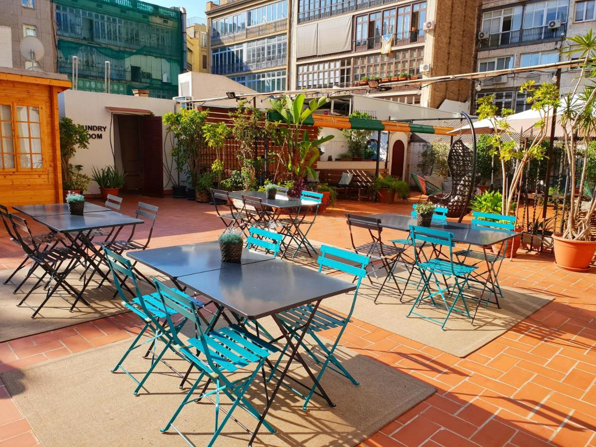
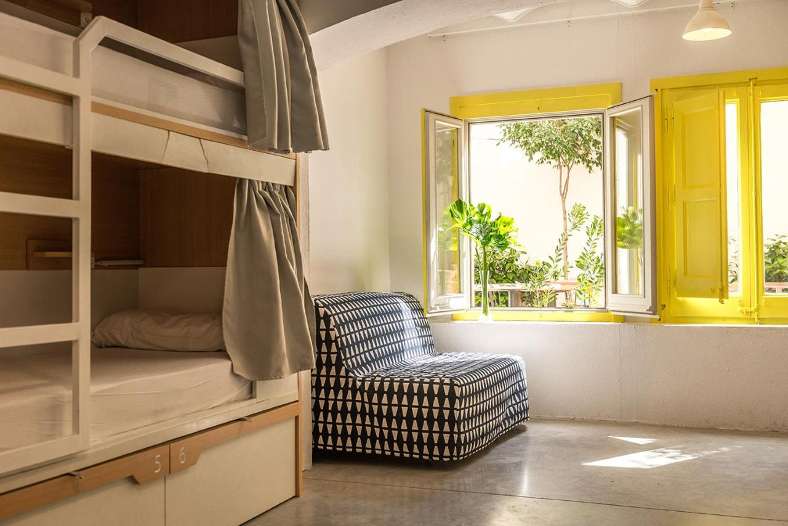

Barcelona
Hoteli

Udaljenost od postaje metroa/podzemne: 200 m
Obližnje atrakcije/znamenitosti: Goya Theatre, Coliseum, Muzej suvremene umjetnosti u Barceloni, kazalište Tivoli, Trg Placa Catalunya
Plaže u blizini: plaža Sant Miquel, plaža Barceloneta, plaža Sant Sebastian

Udaljenost od postaje metroa/podzemne: 250 m
Obližnje atrakcije/znamenitosti: Agbar Tower, Port Olimpic, Katedrala Sagrada Familia
Plaže u blizini: plaža Bogatell, plaža, Mar Bella, plaža Nova Icaria, plaža Nova Mar Bella

Udaljenost od postaje metroa/podzemne: 100 m
Obližnje atrakcije/znamenitosti: Poliorama Theatre, Trg Placa Catalunya, kazalište Tivoli, kuća Batllo
Plaže u blizini: plaža Sant Miquel, plaža Barceloneta, plaža Somorrostro
Apartmani

Udaljenost od postaje metroa/podzemne: 300 m
Obližnje atrakcije/znamenitosti: Casa Calvet, Borras Theatre, kazalište Tivoli, kuća Batllo
Plaže u blizini: plaža Somorrostro, plaža Barceloneta

Udaljenost od postaje metroa/podzemne: 200 m
Obližnje atrakcije/znamenitosti: Colegio de las Teresianas, trgovački centar L`illa Diagonal

Udaljenost od postaje metroa/podzemne: 200 m
Obližnje atrakcije/znamenitosti: Zgrada La Pedrera, Zaklada Antoni Tàpies, kuća Batllo, kazalište Tivoli
Hosteli

Udaljenost od postaje metroa/podzemne: 350 m
Obližnje atrakcije/znamenitosti: Zgrada La Pedrera, Teatreneu Theatre, Aqua Urban Spa, kuća Batllo, katedrala Sagrada Familia

Udaljenost od postaje metroa/podzemne: 200 m
Obližnje atrakcije/znamenitosti: Jove Regina Theatre, Aqua Urban Spa, zgrada La Pedrera, kuća Batllo

Udaljenost od postaje metroa/podzemne: 300 m
Obližnje atrakcije/znamenitosti: zgrada La Pedrera, kuća Batllo, Passeig de Gracia, kazalište Tivoli
Najbliža plaža: plaža Somorrostro